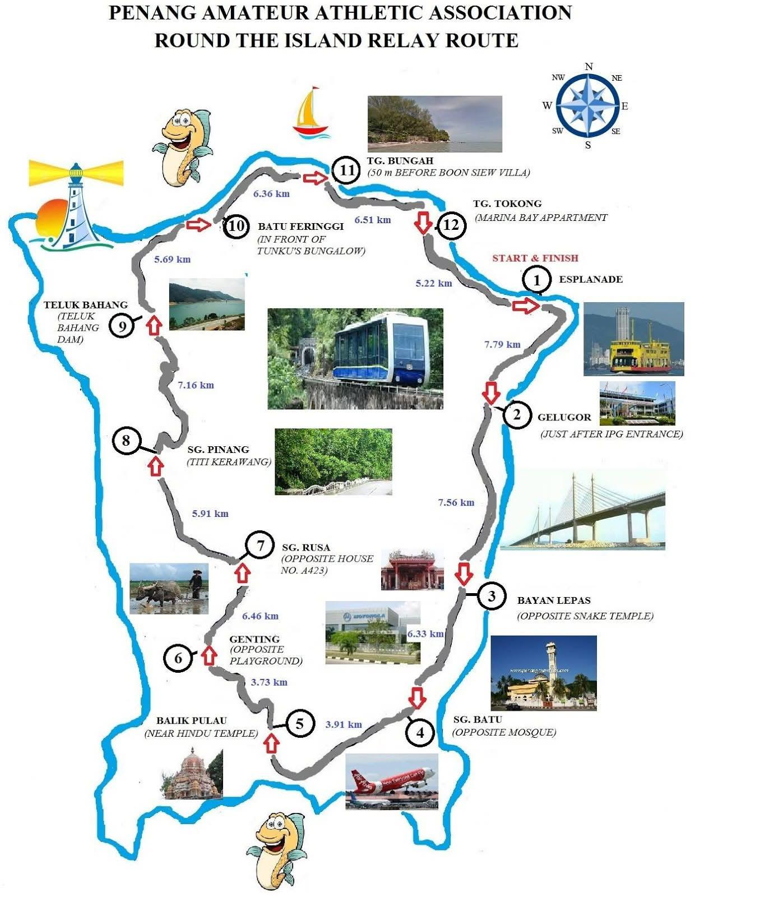

Sort by
Distance and elevation figures are calculated from Garmin Connect course exports.
Route map


How difficulty is rated
A rough guide, not an official grading. The number beside each rating is the effort index, which is what the difficulty sort uses. Effort index = distance (km) + ascent (m) ÷ 100 + descent (m) ÷ 200. Easy is up to 5.5, Moderate up to 7.5, Hard above that.
Climb and descent are estimated from GPX elevation samples. A rise or fall is counted once it adds up to more than 2 m, which ignores GPS noise but keeps gentle slopes. Figures may differ slightly from Garmin’s own. Heat, surface and road crossings also affect how a leg feels, so check the course before you run it.